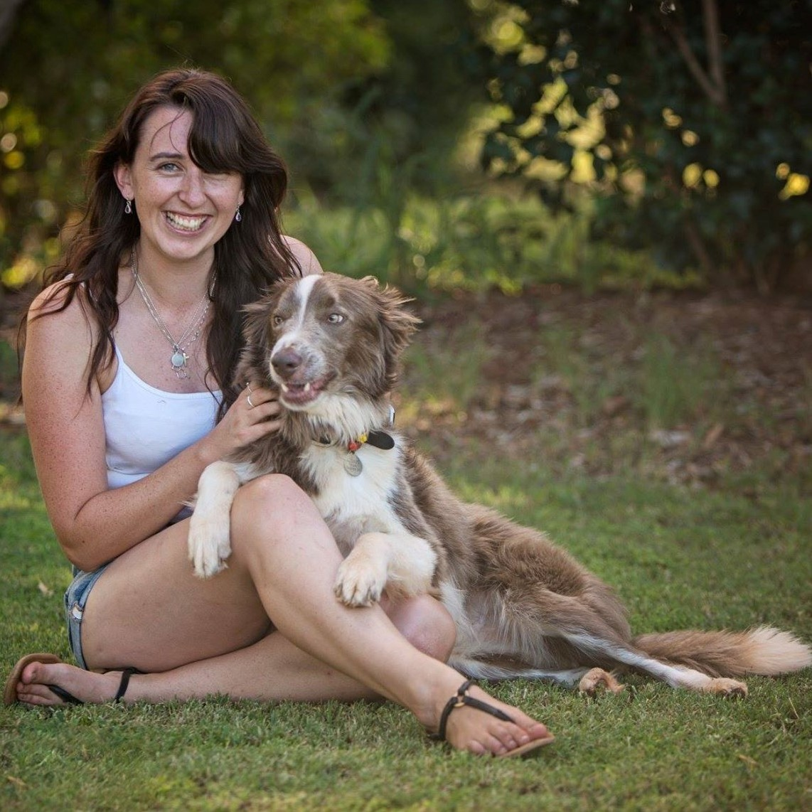

I went to code_systers and all I made was this kick-ass webpage!
About Me
Amy is a freelance developer who has forged her path by starting her own business at only 20 years of age. With several academic awards to her name, she regularly shares her knowledge with her peers and the next generation of developers by mentoring, coaching, teaching and feeding into the tech community in many ways.
Amy can be found volunteering her time with Fenders, Perth Web Girls and YOW! Conference as well as sharing her knowledge and experience on her blogs. Amy has previously given keynotes at multiple events as well as speaking at three international conferences so far this year.